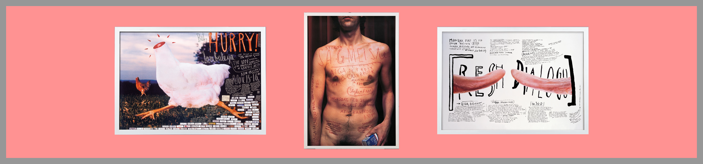

Stefan Sagmesiter is one of the most influential designers today. Best known for his wacky, outrageous designs he challenges society and has a firm grip on his job as a designer. Having established his own company, Sagmeister Inc, in 2012 he changed the company’s logo from an “S” to an “&” after recruiting Jessica Walsh. The company is now Known as “Sagmeister & Walsh’ and is still based in New York doing work for many clients including Levi's, Droog, AIGA and the Museum of Modern Art only to name a few.
“STYLE = FART”
Sagmeister was born in Bregenz, Austria on August 6th 1962. After graduating from college Sagmeister had originally intended to become an engineer, however he swiftly changed his mind and decided to change his course to Graphic Design. He eventually made it into the University of Applied Arts Vienna. Here he was awarded an M.F.A and was granted a Fulbright scholarship to continue his studies at Pratt institute in New York. He briefly returned to Austria to do community service for obligatory military servies.
From the age of 15 he started working for the magazine Alphorn and quickly realised his passion for design. His first professional industry job was for Leo Burnett in their office located in Hong Kong. Later he became greatly influenced by another rebellious designer, Tibor Kalman.
“Tibor Kalman was the single most influential person in my design-y life and my one and only design hero”
Eventually, Sagmeister began working for M&Co in 1993. While working here, he had learnt that Kalman had another talent. Knowledgable and experienced advice. However the company soon shut it’s doors abrubtly and Sagmeister decided to open his own company much like his “hero”, Kalman.
Sagmeister could be described as a fearless designer. His work is highly unorthodox, for example, when he announced he was opening his own company, Sagmeister Inc. he posed completely naked for two photos. Likewise, when he announced Jessica Walsh was his business partner, both individuals posed naked side by side. I think it’s fair to say many people would think of this as a bold and daring move, however I think it shows the dedication both designers have to their job.
Some of Sagmeister's most famous work comes from music. After M&Co shut its doors, he decided to turn his interests to designing CD covers.
“I get a bigger kick out of meeting some of my musical heroes than sitting in meetings with a marketing director, which I did a lot before I opened my own specialized studio”
He seemed to relish the idea of working for each individual artist and creating covers based on what he felt from the music and the personality of each artist. Probably his most famous CD cover was for Lou Reed, Set the Twilight Reeling.
“We tried to illustrate the metamorphosis from his dark prince character to a new found man by utilizing a deep blue tinted jewel case in combination with a very bright printed portrait of Lou on the booklet cover. Opened up, the back of the booklet, the design of the CD itself and the tray card together form a diagram of an eclipse, - the ultimate twilight. The typographic style inside reflects the content of the lyrics.”
I think what Sagmeister has done here is very clever. He has placed the image in an indigo tinted CD case, so when you remove the image from its case it seems as though Lou Reed truly appears out of the twilight. Sagmeister also designed the poster for the release of the album. On it, an image of Lou Reed with song lyrics placed on top of the image. The song lyrics are very personal to the artist so Sagmeister thought this would work well as the lyrics written on his face reflected the intimacy of the lyrics.
In 2000, Sagmeister again designed another CD cover for Reed, Ecstasy. For this cover, Sagmeister asked Reed to masterbate behind a curtain while he was being photographed. This would then show Reed in a state of pure bliss and satisfaction or Ecstasy. Personally, I think this is brilliant. Not only is it clever and smart, but it’s very out there. What other artist has an image of themselves masturbating on the cover? For most it could come across as a little weird or creepy, but here I think it just works exceptionally.
Some of Sagmeister’s other best known work are his posters. Perhaps his most famous poster is for a lecture for AIGA Detroit in which Sagmeister has his intern, Michael, carve the type into Sagmeister’s skin on his chest. This was done to show the pain designers go through in their everyday work.
“Yes, it did hurt real bad.”
Another well known poster is that of a headless chicken and some very squiggly writing. This was for another AIGA conference but in New Orleans this time. The chicken symbolises the designer, telling them to stop running around (like a headless chicken) and attend the conference. It also is a metaphor for a voodoo symbol linked to the location of the conference and it also stands up against the exaggerated use of computers/technology in the late 1990s.
In 1996, Sagmeister designed another poster for a lecture titled “Fresh Dialogue” with AIGA. As the lecture had dialogue in its title it was only fitting that Sagmeister had tongues on the poster, however, these were not regular tongues. Tom Schierlitz photographed two cow tongues from a nearby market. While the outcome was welcomed by the Sagmeister company, the outcome wasn’t received so well by the AIGA community.
“Somehow they came out phallic. We did not mind. Some AIGA members did.”
Currently, Sagmeister is working on a film titled “The Happy Film” in which he experiments with meditation, therapy and drugs to see if he can become a happier person. In this documentary we follow Sagmeister and all his experiments to see if he can achieve his goal. However, reality is never too far away. Although Sagmeister is trying to focus on the positives, sex, love, art and death are always looming.
I’m very excited to see the outcome of this film. Sagmeister has had several installations in which he asked people to rate their happiness. He also shows facts and figures stating that an individal's happiness will not be affected if you’re male or female, married or single, fat or thin, black or white, gay or straight, rich or poor. However, an individual's social life can have a huge affect on their happiness. If someone feels as though they are left out of society it can have a huge impact on their happiness. I think it’s very interesting how seriously Sagmeister takes his job as a designer as he shows people how to make themselves more happy. He shows people that their happiness is in their own hands, not somebody elses, an important lesson that I think has to be learnt by a lot of people.
Every seven years, Sagmeister shuts his company’s doors for one year and take a sabbatical. In 2008 he went to Bali. At first he had no plans and so he started doing small little jobs and slowly he became his own intern. He soon put a stop to this and after making many lists and grids, he made himself a time-table (like back in school) to think about his business and his future. While on his sabbatical, he completed various different projects including a “talkative chair” in which he weaved words and letters into a chair from the diary he kept on his trip. Some quotes from the chair are classic Sagmeister like “My big toe appears to be dirty”, others are more warm and thoughtful; “a big hug from Bali”.
“My big toe appears to be dirty”
Stefan Sagmeister’s work has been recognised immensely around the globe. Obviously, his work his become famous and iconic far and wide. For his CD cover designs he received two Grammy awards, Best Record Packaging and Best Boxed or Special Limited Edition Package and has received many Grammy nominations. He was also awarded the National Design Award for his designs.
In recent years Sagmeister & Co have acquired many awards including the Tokyo TDC Grand Prix award for their movie “Now Is Better”. Originally the movie was for the exhibition The Happy Show in Philadelphia.
In 2015 they won the TDC award for three pieces of work they entered; Barneys x Jay-Z Packaging, Aizone Campaign, and The Jewish Museum Identity. There were 1600 entries from 49 countries, which shows the talent within Sagmeister Inc.
Again, in 2016 “Now Is Better” won another award at the SFMOMA (San Francisco Museum of Modern Art). The Happy Show was bought by the museum and is part of the inaugural exhibition.
Due to Sagmeister’s long list of awards and nominations it is clear he has a unique and marvellous talent. It’s no wonder he is world famous due to his impressive capability and skill. I think it is incredible how time and time again Sagmeister shows his ability and devotion to his job as a designer. He is fully aware of the importance of his job and the impact he has on the globe and takes his role seriously, despite some of his humourous ideas/designs. I think it’s important more designers are aware of their impact on the world and that is probably one of the biggest lessons Sagmeister has taught me.